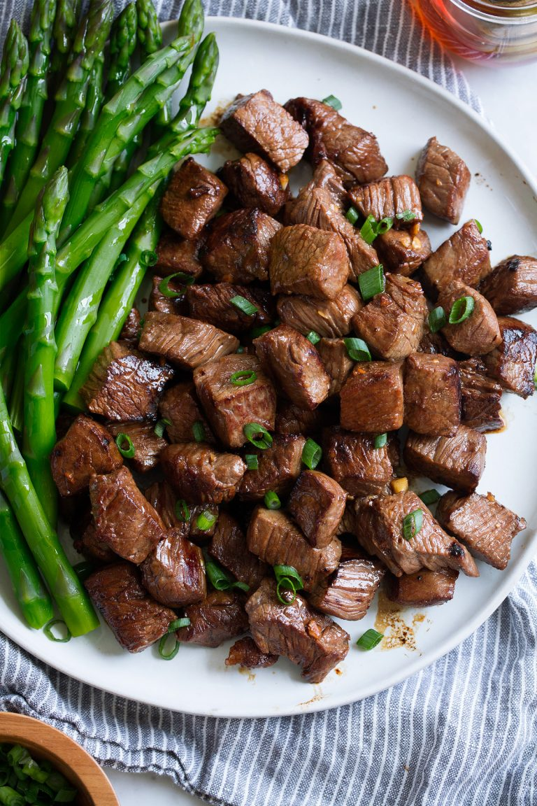

Honey Garlic Steak Bites

Description
I love this recipe because all you need for the marinade is honey,
soy sauce, and garlic. Simple ingredients yet big flavor!
You will forget all about Worcestershire sauce
Steak is cut into perfect bite-size pieces, marinated,
then quickly pan-seared for nicely browned steak on the outside
and medium cooked, juicy and tender steak on the inside. Then for an easy
side serve it with baked potatoes or rice and steamed veggies.
Ingredients
- Sirloin steak
- Low sodium soy sauce
- Honey
- Fresh garlic cloves
- Olive oil or vegetable oil
- Optional: experiment with fresh herbs like thyme or rosemary,
or dried herbs like red pepper flakes or garlic powder
Steps
- Place steak pieces in a gallon-size resealable bag
- In a mixing bowl whisk together your garlic butter sauce of
soy sauce, honey, and garlic
- Pour mixture over steak strips, seal bag while pressing out excess
air then rub marinade over the beef.
- Transfer to refrigerator and let marinate 1 to 2 hours
- Heat and stir 1 Tbsp oil in a heavy non-stick skillet
over medium-high heat.
- Working in batches, remove half the steak from the marinade,
transfer to skillet and let sear until golden brown, adding salt and
black pepper to taste, about 1 minute then rotate to the
opposite side.
- Let continue to cook to the desired doneness, about 1 minute longer
(internal safe temperature is 145 degrees).
- Transfer to dishes and repeat with the remaining steak.
- Top with green onions or fresh parsley for garnish.
Serve with a salad, steamed asparagus, or mash potato side dishes
Home